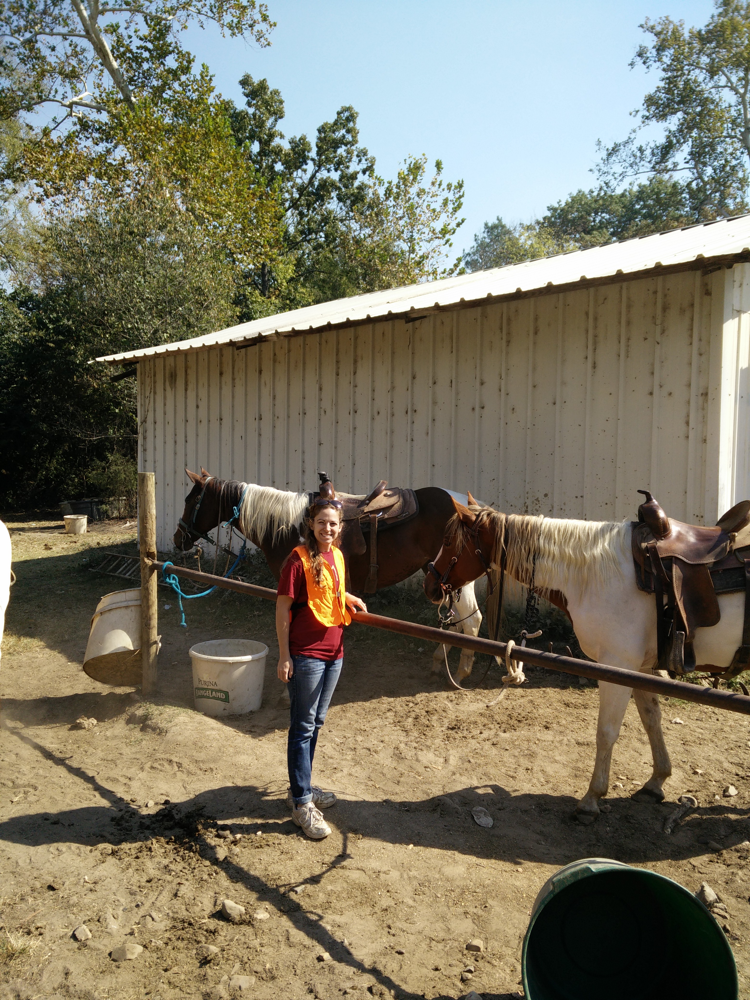

I rode a horse two weeks ago. It was only my second time to ride without a guide holding the reigns.
The first time riding, I had little confidence in my ability, and the horse was in command.
This plan did not work out in my benefit. The horse walked between two trees that were very close together.
The trees were far enough apart for the horse to squeeze through, but they were too close to let my legs get past!
Not being willing to control the horse, I let him walk
me straight into the trees!
Thankfully, I did not get pushed from his back. Instead, I managed to put the horse in reverse and get out of the trees. Afterwards, I kept a firmer hand on the reigns.
My second outing went better.
Part One: The Crying Girl and the Mountain Climbing Horses
Michelle and I are the last to get in the saddle. I'm riding Bill and Michelle is on Daisy. As we get comfortable, our fearless leader, a 12 year old girl, gives us instructions on controlling the horse.

The scene is what one would expect on a group horse ride: a gorgeous day at perfect temperature, a leader giving instructions, a few dogs circling the group, 11 people atop horses in a semi-circle, each hanging on to every word in hopes it might save their life, and one 16 year old, sobbing, clearly convinced the instructions will not save her from her impending doom.
I try to act as if the crying girl does not exist, realizing her three friends can comfort her much better than I. If I were in her shoes, I also would prefer others to ignore my existence. As the ride begins, it is clear that neither her friends nor my valiant efforts at ignorance will cheer her.
The girl and her boyfriend end up right in front of me. He is speaking soft words to her from his horse. His horse, however, did not get the memo of kindness. Apparently the two horses get close to each other, and I watch as the boyfriend's horse kicks the girl's horse!
Thinking back on it, perhaps the horse did get the memo, and it is just not skilled at awkward social interactions. In any case. I am thrust into an awkward social interaction myself. The girl falls behind me, but her boyfriend and two other friends are stuck in front of me due to the narrow trail. The result: constant stares and regular words of encouragement passing by me to the crying girl. Caught previously ignoring the girl's existence, I am now offered the same treatment.
Eventually the girl begins to cheer up. In fact, she even smiles! However, the trail, expecting unskilled horseman to just be gaining confidence, decides to throw us a deep incline.
The horses are now wondering why we are expecting them to behave like mountain goats. They turn sideways, inching step by step downhill. I hear the girl stifle a cry behind me. We soon discover that the horses are experts in mountain climbing! They head down the hill at a steady pace without incident.
Part 2: The Beauty of Nature and Cowdogs
As we traverse this steep hill, I realize how much I am loving this experience! The horses are carrying full grown people on their back down a hill I probably couldn't safely traverse on my legs, and they are pros! The ride is full of excitement. And as we break free of the mountain and into more open fields, the horses begin to trot. Even the girl can't hold back laughter as we move through the plain, enjoying the sun.
The rest of the trip we are treated to grand views. The ranch is in Broken Bow, and the owner's property is beautiful. Being cooped up in cities for so long now, it's easy to forget what it's like to be surrounded by nature!
In this area, the dogs following become comedians. They run between our horse's legs, chasing each other. When we reach the water, one dog is so small he swims through what the horses are easily walking in. As he reaches the end, he attempts to jump up on a dry rock, misses by a bit, and tumbles back into the water! He immediately gets up and finds another route.
Then we get to see the dogs at their funniest moment. We pass a herd of cattle, and the dogs decide to chase them down! Do you remember the scene in The Lion King where Pumbaa barrels into a crowd of vultures? This is similar, except it's like Timon chasing a crowd of Pumbaas!
The cows run full speed away from the dogs, but one cow can't get away from a certain dog! The dog chases right on the heels of the cow. The dog is clearly having the time of its life! The cow on the other hand...
After a complete hour, we arrive safely back at the starting location. We all had a great time, including the previously terrified girl!
Conclusion: Our Blessed God
Recently, I memorized 1 Timothy 6:15. It begins with "He is the blessed and only Sovereign, the King of Kings and the Lord of Lords." As we were trotting along in silence, I decided to spend some time meditating on that verse, specifically what it means that God is "blessed."
Working with the understanding that "blessed" is roughly synonymous to the word "happy," I considered the happiness of God. The atmosphere was very timely. Because God is omnipresent (Psalms 33:13-14), He was with us during that ride. I considered how pleasing the trip must have been to Him. He created all nature: the sun, the trees, and the horses. And He gave us dominion over them and wants us to enjoy (Psalm 8:6-7). The eleven of us were marveling at His creation that day. We were laughing in glee when the horses picked up the pace or the dogs were acting silly. We cried in terror at the power of the horses. And those of us who believe in Him and call on His name were praising Him for the works of His hands.
I am confident watching people enjoy His creation blesses Him as an artist is pleased when others enjoy his painting. In fact, I am confident that God is constantly happy. His plan of saving the nations through Jesus is in motion, in His name, by His power, and with Him with us, His followers war against darkness. And because of His grace, a broken world gets time to marvel at the beauty of what He creates.
Any time you look in awe at creation, remember the Creator. As the painter puts his personality into the work, God has put Himself into the world. Romans 1:20 states that His eternal power and divine nature are clearly perceived ever since the creation of the world! Whenever you are enjoying creation - admiring the stars, riding a horse, enjoying your friends - you are enjoying the Creator of them all.
I'd like to leave you with a Psalm. I'd love to hear stories of your favorite times enjoying God in nature! Feel free to leave me any comments or feedback!
O Lord, our Lord, how majestic is your name in all the earth! You have set your glory above the heavens. Out of the mouth of babes and infants, you have established strength because of your foes, to still the enemy and the avenger.
When I look at your heavens, the work of your fingers, the moon and the stars, which you have set in place, what is man that you are mindful of him, and the son of man that you care for him?
Yet you have made him a little lower than the heavenly beings and crowned him with glory and honor. You have given him dominion over the works of your hands; you have put all things under his feet, all sheep and oxen, and also the beasts of the field, the birds of the heavens, and the fish of the sea, whatever passes along the paths of the seas.
O Lord, our Lord, how majestic is your name in all the earth!
Psalm 8 (ESV)
See you next time!